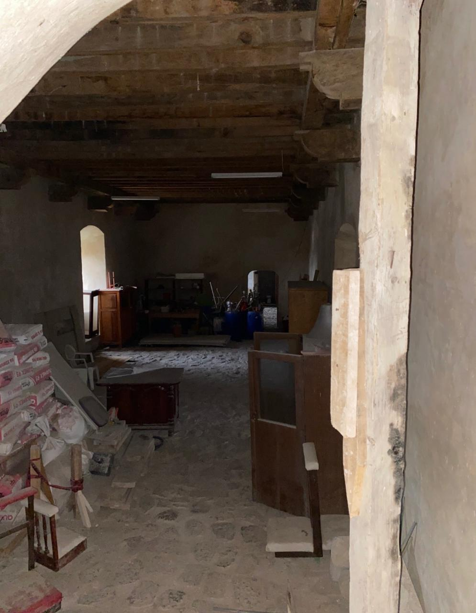

El refectorio
La mesa compartida en la vida conventual
El refectorio era el espacio donde la comunidad religiosa se reunía para compartir los alimentos. También este momento cotidiano formaba parte del ritmo ordenado de la vida conventual: los frailes se sentaban juntos a la mesa, haciendo de la comida un acto comunitario.
Durante los alimentos se procuraba mantener un ambiente de silencio y recogimiento. Mientras los frailes comían, uno de los religiosos realizaba lecturas que podían proceder de la Sagrada Escritura, de la Regla de la Orden o de otros textos destinados a la formación espiritual de la comunidad.
De esta manera, el alimento del cuerpo iba acompañado por el alimento de la palabra. Incluso el tiempo de la comida recordaba al fraile que toda su jornada estaba orientada hacia la oración, el estudio, la vida fraterna y la predicación.
Al continuar nuestro recorrido veremos algunos elementos vinculados directamente con este espacio: el lavabo, relacionado con el agua utilizada para lavarse las manos, y el ambón desde donde se realizaban las lecturas durante los alimentos.
El refectorio después del sismo

El refectorio durante los trabajos de restauración posteriores al sismo de 2017.